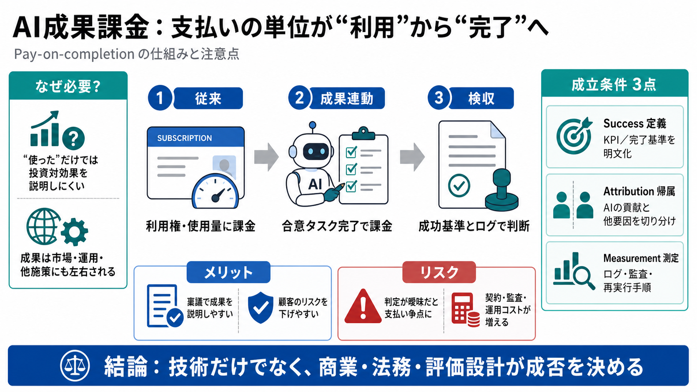

Outcome-Based Pricing Models For B2B Brands: 2026 Guide
Key Components: Defined Baselines: A clear measurement of performance before the contract begins to ensure the vendor …

Key Components: Defined Baselines: A clear measurement of performance before the contract begins to ensure the vendor …
This comparison evaluates nine enterprise-grade attribution platforms based on data accuracy, multi-touch modeling capab…
Harvey AI's March 2026 raise at $11 billion made it the most valuable pure-play legal AI company in history. By year-end…
Company About us Careers Affiliate Program Contact Resources Case Studies Blog Documentation Status Legal #…
Enterprise teams should begin preparing now by auditing attribution infrastructure, defining outcome taxonomies, investi…